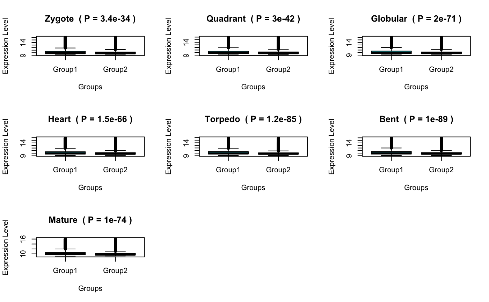

R/PlotGroupDiffs.R
PlotGroupDiffs.RdThis function performs a test to quantify the statistical significance between the global expression level distributions of groups of PS or DS. It therefore, allows users to investigate significant groups of PS or DS that significantly differ in their gene expression level distibution within specific developmental stages or experiments.
PlotGroupDiffs( ExpressionSet, Groups = NULL, legendName = NULL, stat.test = "wilcox.test", col = c("turquoise3", "magenta3"), plot.type = NULL, gene.set = NULL, ... )
| ExpressionSet | a standard PhyloExpressionSet or DivergenceExpressionSet object. |
|---|---|
| Groups | a list containing the phylostrata or divergence strata that correspond
to the same phylostratum class or divergence class.
For ex. evolutionary old phylostrata: PS1-3 (Class 1)
and evolutionary young phylostrata: PS4-12 (Class 2). In this case,
the list could be assigned as, |
| legendName | a character string specifying whether "PS" or "DS" are used to compute relative expression profiles. |
| stat.test | the statistical test to quantify PS or DS group differences. |
| col | colors for the two box plots representing the expression level distributions of selected PS/DS groups. |
| plot.type | the type of plot that shall be drawn to visualized the difference in PS/DS group specific expression . |
| gene.set | a character vector storing the gene ids for which group specific differences shall be statistically quantified. |
| ... | additional plot parameters. |
The purpose of this function is to detect groups of PS or DS that significantly differ in their gene expression
level distributions on a global (transcriptome) level. Since relative expression levels (PlotRE) or
PS or DS specific mean expression levels (PlotMeans) are biased by highly expressed genes,
this function allows users to objectively test the significant difference of transcriptome expression between
groups of PS or DS in a specific developmental stage or experiment.
In particular, this function divides (for each developmental stage separately) the gene expression levels into two groups: Group1 = genes deriving from selected PS/DS in group 1 and
Group2 = genes deriving from selected PS/DS in group 2. Within each stage the expression level distributions between group 1 and group 2 are statistically quantified using a wilcox.test.
Hajk-Georg Drost
data(PhyloExpressionSetExample) PlotGroupDiffs(ExpressionSet = PhyloExpressionSetExample, Groups = list(group_1 = 1:3,group_2 = 4:12), legendName = "PS", type = "b", lwd = 6, xlab = "Ontogeny") #> Zygote Quadrant Globular Heart #> p.value ( wilcox.test ) 3.362424e-34 3.017793e-42 1.987181e-71 1.546567e-66 #> Torpedo Bent Mature #> p.value ( wilcox.test ) 1.174961e-85 9.975191e-90 1.007102e-74 # only receive the p-values without the corresponding plot PlotGroupDiffs(ExpressionSet = PhyloExpressionSetExample, Groups = list(group_1 = 1:3,group_2 = 4:12), legendName = "PS", plot.p.vals = FALSE, type = "b", lwd = 6, xlab = "Ontogeny") #> Zygote Quadrant Globular Heart #> p.value ( wilcox.test ) 3.362424e-34 3.017793e-42 1.987181e-71 1.546567e-66 #> Torpedo Bent Mature #> p.value ( wilcox.test ) 1.174961e-85 9.975191e-90 1.007102e-74 # quantify the significant difference of a selected set of genes # only receive the p-values without the corresponding plot set.seed(123) ExampleGeneSet <- sample(PhyloExpressionSetExample[ , 2],5000) PlotGroupDiffs(ExpressionSet = PhyloExpressionSetExample, Groups = list(group_1 = 1:3,group_2 = 4:12), legendName = "PS", plot.p.vals = FALSE, gene.set = ExampleGeneSet) #> Zygote Quadrant Globular Heart #> p.value ( wilcox.test ) 7.440596e-07 5.336307e-09 7.197872e-17 2.406206e-16 #> Torpedo Bent Mature #> p.value ( wilcox.test ) 1.638876e-17 4.562901e-17 1.684535e-15 # plot differences as boxplot for each developmental stage PlotGroupDiffs(ExpressionSet = tf(PhyloExpressionSetExample,log2), Groups = list(group_1 = 1:3,group_2 = 4:12), legendName = "PS", plot.type = "boxplot") #> Zygote Quadrant Globular Heart #> p.value ( wilcox.test ) 3.362424e-34 3.017793e-42 1.987181e-71 1.546567e-66 #> Torpedo Bent Mature #> p.value ( wilcox.test ) 1.174961e-85 9.975191e-90 1.007102e-74 